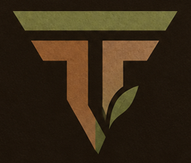

SEESAW
Earth's Opposite-Trend Detective
FDR correction
SAMPLE DATA: these values are synthetic, generated to test the interface. They are not NASA observations.
Click a hexagon to open its case
0
significant
not significant
state boundary
UF
state code